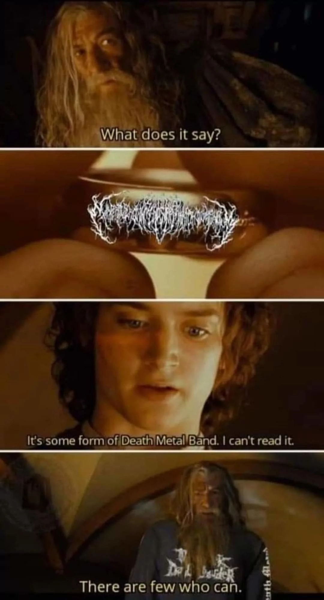

Congratulations, you have passed the third test. Your enlightened mind and social attitude allowed you to advance a very difficult obstacle. Answers are usually quite like that, they are often within ourselves but we need others to find them. To proceed to level 4, send an email with a short epic poem about your favorite snack. As always, remember to sound like a casual recommendation and not suspicious at all; they are always watching. After I receive this email, I will unlock the fourth level, and you will be notified promptly. Best of Luck!
